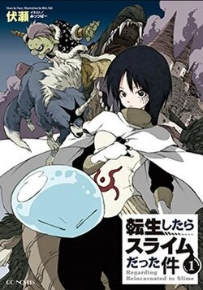
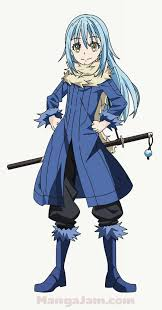
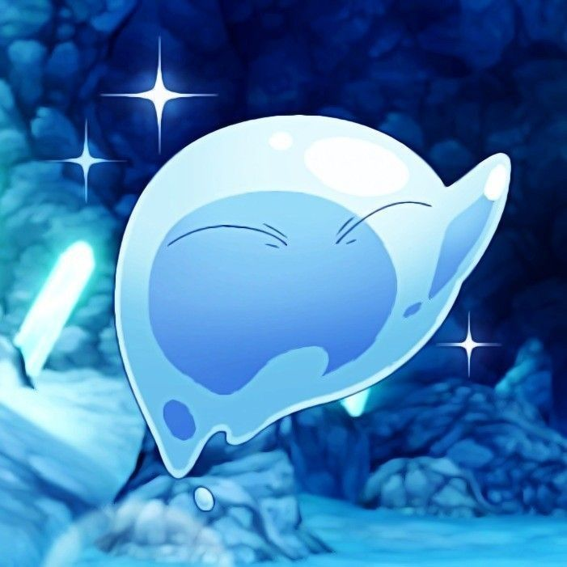

Tensei Shitara Slime datta ken (転生したらスライムだった件, Tensei Shitara Suraimu Datta Ken) também conhecido como TenSura ou Isekai do Slime
Satoru Mikami é um funcionário corporativo comum de 37 anos que mora em Tóquio. Que morreu para ajudar um colega de trabalho e sua noiva
Depois de sua morte, ele se encontra em um mundo de fantasia como um slime, uma criatura fraca e sem forma. Ele adquire habilidades únicas e começa a explorar o novo mundo, fazendo amigos e enfrentando desafios.
imagens do manga e do anime:

Neste universo eu tenho muitos personagens favorios, mas 1 deles se descataca, é claro que o
Rimuru Tempest
imagens logo abaixo versao Humana:


ele é muito fofo na versao de slime, mas muito poderoso na versao humana isso faz ser a melhor forma dele eu gosto mto das duas formas